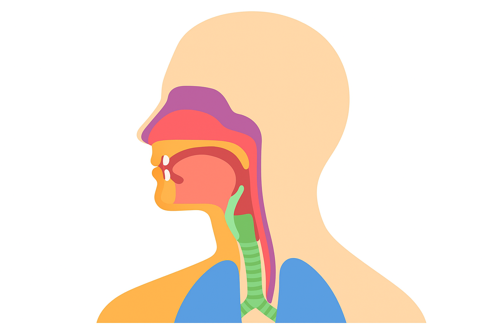

Os Órgãos da Fala e a Produção dos Sons da Linguagem Humana
A capacidade humana de emitir sons verbais articulados representa um dos ápices da complexidade evolutiva e biofísica da nossa espécie. Cotidianamente, expressamos ideias, emoções e conceitos complexos mediante a emissão aparentemente espontânea de vocábulos e frases. No entanto, subjacente à naturalidade de uma conversa casual opera uma refinada engrenagem neuromuscular: a coordenação instantânea de dezenas de músculos, estruturas cartilaginosas, cavidades de ressonância e gradientes de pressão de ar que transformam o sopro vital da respiração em ondas mecânicas carregadas de sentido.
Em termos anatômicos estritos, a biologia humana não desenvolveu órgãos criados primariamente para a função da fala. Aquilo que a ciência linguística designa genericamente como aparelho fonador constitui uma engenhosa adaptação secundária de estruturas cujas funções primitivas e vitais são a respiração (pulmões, traqueia, brônquios) e a deglutição/alimentação (dentes, lábios, língua, palato e faringe). A espécie humana sobrepôs a função comunicativa a esses órgãos biológicos preexistentes, dotando-os de uma flexibilidade motora incomparável no reino animal.
Compreender a anatomia e a fisiologia dos órgãos da fala é o objeto fulcral da Fonética Articulatória. Essa disciplina investiga a cinética dos tecidos, a mecânica dos fluidos aéreos no trato vocal e os princípios acústicos que explicam como pequenos deslocamentos milimétricos da ponta da língua ou milissegundos de fechamento labial são capazes de criar distinções fônicas fundamentais para as línguas naturais do mundo.
Neste artigo acadêmico, você explorará a organização morfofuncional dos três subsistemas do aparelho fonador (respiratório, laríngeo e ressonador), a célebre Teoria Fonte-Filtro formulada por Gunnar Fant, a distinção anatômica entre articuladores ativos e passivos, as classificações rigorosas de modo e ponto de articulação consonantal, além de diagramas, exemplos empíricos de acoplamento muscular, questões resolvidas e sínteses teóricas.

A organização morfofuncional do aparelho fonador
Para que ocorra a emissão de qualquer som articulado, o aparelho fonador deve operar de maneira hierárquica e perfeitamente sincronizada. A fonética divide esse conjunto orgânico em três subsistemas anatômicos interdependentes, cada qual desempenhando uma função termodinâmica e acústica específica:
A Tríade Morfofuncional da Produção Vocal
- Sistema Respiratório ou Iniciador (Fole aerodinâmico): engloba os pulmões, o músculo diafragma, a caixa torácica e os músculos intercostais, responsáveis por gerar e impulsionar a coluna de ar sob pressão contínua;
- Sistema Fonador ou Laríngeo (Gerador da fonte sonora primária): situado na laringe, contém o complexo das cartilagens tireóidea, cricóidea e aritenóideas e as pregas vocais, cuja adução e vibração originam a fonação;
- Sistema Articulador e Ressonador (Filtro acústico supraglótico): composto pela faringe, cavidade bucal e cavidade nasal, cujos volumes variáveis moldam, amplificam ou atenuam faixas específicas de harmônicos gerados na laringe.
A natureza adaptada do aparelho fonador
“O aparelho fonador não é um sistema anatômico fechado e independente, mas sim um conjunto de órgãos vitais primariamente destinados à sobrevivência orgânica (nutrição e respiração) que a espécie humana adaptou e refinou ao longo da evolução para servir como suporte físico à fala articulada” (CÂMARA JR., 2011, p. 19).
O Sistema Respiratório: a matéria-prima do som
A quase totalidade das línguas do planeta — incluindo todos os fonemas padrão da Língua Portuguesa — utiliza uma corrente aérea de mecanismo pulmonar egressivo. Isso significa que a matéria-prima básica do som é o fluxo de ar expiratório impelido dos pulmões para o meio exterior.
Durante o ciclo da respiração vital silenciosa, a inspiração e a expiração ocupam intervalos temporais praticamente idênticos (cerca de 40% para inspiração e 60% para expiração). Contudo, durante o ato da fala, o sistema neuromuscular altera radicalmente esse padrão: ocorre uma inspiração profunda e veloz (cerca de 10% do ciclo), seguida de uma expiração prolongada, sustentada e milimetricamente dosada (ocupando até 90% do tempo), sustentada pela contração gradual dos músculos abdominais e intercostais internos.
Essa expiração controlada mantém uma pressão subglótica constante imediatamente abaixo das pregas vocais. Sem essa pressão aerodinâmica estável, seria impossível sustentar a intensidade acústica, a altura da voz e a cadência melódica das frases (prosódia).
O Sistema Fonador: a laringe e a biomecânica da fonação
Ao ascender pela traqueia, a coluna de ar sob pressão atinge a laringe, uma estrutura músculo-cartilaginosa situada no topo do tubo respiratório. A laringe atua primordialmente como válvula protetora contra o engasgo (impedindo que alimentos entrem nas vias aéreas inferiores por meio do fechamento da epiglote) e como válvula reguladora de esforço físico. Na fala, sua função é operar como a geradora de som primário da voz.
No interior da laringe encontram-se as pregas vocais (termo cientificamente preferido à antiga expressão "cordas vocais"). Trata-se de duas dobras musculares e ligamentares recobertas por mucosa, fixadas anteriormente na cartilagem tireóidea e posteriormente nas cartilagens aritenóideas móveis. O espaço triangular compreendido entre as bordas livres das duas pregas vocais é denominado glote.
Sons Sonoros (Vozeados)
As pregas vocais são aduzidas (aproximadas na linha média) pelos músculos aritenóideos e cricoaritenóideos laterais. O ar pulmonar acumula-se sob a glote fechada até que a pressão subglótica vença a resistência elástica dos tecidos, forçando sua abertura e rápida oclusão em ciclos ultrarrápidos (de 100 a mais de 250 vezes por segundo).
Exemplos: Todas as vogais ([a], [e], [i]), as nasais ([m], [n]), as líquidas ([l], [ɾ]) e as consoantes sonoras ([b], [d], [g], [v], [z], [ʒ]).
Sons Surdos (Desvozeados)
As pregas vocais permanecem abduzidas (afastadas) pela ação dos músculos cricoaritenóideos posteriores. A glote permanece aberta e a corrente aérea flui livremente pela laringe sem induzir vibração mecânica nos tecidos musculares. O som resultará unicamente do ruído de turbulência ou impacto criado nos articuladores superiores.
Exemplos: As consoantes oclusivas e fricativas surdas do português: [p], [t], [k], [f], [s], [ʃ].
O fenômeno físico da oscilação das pregas vocais é explicado pela clássica Teoria Mioelástica-Aerodinâmica da Fonação (TITZE, 1994). O fechamento cíclico não depende de ordens nervosas individuais para cada batimento muscular, mas da interação entre a tensão elástica tecidual e o Efeito Bernoulli: quando o ar comprimido escapa velozmente pela fenda glótica estreita, a velocidade do fluido aumenta e gera uma queda instantânea de pressão lateral entre as pregas, "sugando-as" de volta ao contato mútuo.
O Sistema Ressonador e Articulador: o filtro supraglótico
Após cruzar a laringe, a onda sonora atinge o trato vocal supraglótico, uma cavidade tubular tridimensional de formato dinâmico que compreende a faringe, a cavidade oral e a cavidade nasal. É nesse espaço que o som cru gerado na glote adquire a sua identidade tímbrica definitiva, sendo filtrado e articulado nos diversos fones da língua.
Em 1960, o físico e foneticista sueco Gunnar Fant formulou a célebre Teoria Acústica de Produção da Fala (Teoria Fonte-Filtro). Segundo esse modelo, a produção vocal resulta da combinação de dois componentes lineares:
A Teoria Fonte-Filtro de Gunnar Fant
“O sinal acústico de fala é o produto do espectro da fonte sonora (vibração laríngea ou ruído turbulento de atrito) modulado pela função de transferência do filtro (as cavidades ressonadoras supraglóticas). Ao alterarmos as posições da língua, dos lábios e da mandíbula, modificamos as frequências de ressonância do filtro (os formantes), gerando diferentes timbres vocálicos e consonantais” (FANT, 1960; KENT; READ, 2015).
Articuladores da fala: estruturas ativas e passivas
Para converter o som em fones linguísticos discretos, os órgãos situados na cavidade bucal interagem continuamente. A fonética articulatória classifica os componentes do trato oral em duas grandes categorias anatômicas:
Articuladores Ativos (Móveis)
São as estruturas anatômicas dotadas de motricidade independente que realizam movimentos em direção aos pontos de contato para obstruir, modular ou estreitar o trato vocal.
- Língua: o articulador mais flexível e dinâmico, subdividido em ápice (ponta), lâmina, dorso (porção média) e raiz (base faríngea);
- Lábio inferior: desloca-se para oclusão bilabial ou atrito labiodental;
- Véu palatino (palato mole) e úvula: válvula móvel que controla o direcionamento do fluxo aéreo entre boca e nariz;
- Mandíbula: osso móvel que regula a abertura da boca;
- Pregas vocais: atuam como articulador ativo em sons glotais.
Articuladores Passivos (Fixos)
São as estruturas anatômicas ósseas ou imóveis contra as quais os articuladores ativos se apoiam ou se aproximam para delimitar a constrição acústica.
- Dentes superiores (incisivos): ponto de contato para sons labiodentais e linguodentais;
- Alvéolos dentários: cristas ósseas situadas imediatamente atrás das raízes dos dentes superiores, fundamentais para fones como [t], [d], [s], [n], [l];
- Palato duro (céu da boca): abóbada óssea que serve de anteparo para os fones palatais como [ɲ] e [ʎ];
- Parede posterior da faringe: ponto de aproximação para a raiz da língua ou vedação velar.
A função biológica do Véu Palatino: Sons Orais vs. Nasais
O véu palatino (palato mole) desempenha papel crucial na língua portuguesa. Quando o músculo levantador do véu palatino se contrai, eleva-se e encosta firmemente na parede posterior da faringe (vedação velofaríngea), impedindo que o ar penetre na cavidade nasal. O som resultante é puramente oral (como em [p], [s], [a]). Quando o véu relaxa e abaixa, a passagem faringonasal se abre, permitindo que a corrente aérea e as ondas de ressonância ingressem nas fossas nasais, produzindo os sons nasais característicos do português, como as consoantes [m], [n], [ɲ] e as vogais nasais [ã], [ẽ], [ĩ], [õ], [ũ].
Classificação articulatória dos sons da fala
A ação coordenada dos órgãos fonadores gera contrastes que permitem classificar exaustivamente qualquer som consonantal das línguas humanas com base em três parâmetros simultâneos:
1. Ponto de Articulação (Onde o som é produzido)
Identifica as regiões anatômicas onde ocorre o contato ou a máxima aproximação entre articuladores ativos e passivos:
- Bilabial: contato pleno entre lábio superior e lábio inferior (ex.: [p], [b], [m]);
- Labiodental: contato do lábio inferior com as bordas dos dentes incisivos superiores (ex.: [f], [v]);
- Dental / Dentoalveolar: a ponta da língua apoia-se nos dentes incisivos ou nos alvéolos (ex.: [t], [d]);
- Alveolar: o ápice ou a lâmina da língua aproxima-se dos alvéolos (ex.: [s], [z], [n], [l], [ɾ]);
- Pós-alveolar: o ápice ou a lâmina da língua aproxima-se da região posterior aos alvéolos (ex.: [ʃ] em chá, [ʒ] em já, [tʃ] em tia);
- Palatal: o dorso da língua aproxima-se do palato duro (ex.: [ɲ] em ninho, [ʎ] em filho);
- Velar: a parte posterior da língua encosta no véu palatino ou palato mole (ex.: [k] em casa, [g] em gato);
- Glotal: a constrição ou aproximação ocorre no interior da própria laringe, na glote (ex.: a realização aspirada [h] do r em carro em vários dialetos brasileiros).
2. Modo de Articulação (Como o ar vence o obstáculo)
Descreve o tipo de constrição ou barreira aerodinâmica imposta pelos órgãos fonadores à passagem do fluxo de ar:
- Oclusivas: bloqueio completo e hermético do ar, gerando aumento momentâneo de pressão interna seguido de explosão ou soltura rápida (ex.: [p], [b], [t], [d], [k], [g]);
- Fricativas: aproximação estreita entre os órgãos sem fechamento completo, obrigando o ar a escapar por uma fenda minúscula gerando ruído de turbulência e atrito contínuo (ex.: [f], [v], [s], [z], [ʃ], [ʒ]);
- Africadas: sons complexos que iniciam como uma oclusão total e são liberados imediatamente na forma de fricção na mesma região anatômica (ex.: [tʃ] em dia/tia no PB);
- Nasais: fechamento completo na cavidade oral, mas com o véu palatino abaixado, escoando todo o som e o ar pelas fossas nasais (ex.: [m], [n], [ɲ]);
- Laterais: oclusão na linha média da boca pela ponta da língua contra os alvéolos ou palato, enquanto as bordas laterais da língua abaixam, permitindo o escape livre do ar pelos lados (ex.: [l], [ʎ]);
- Vibrantes: produzidas pela oscilação mecânica rápida de um articulador elástico (como a ponta da língua contra os alvéolos), podendo ser simples/tepe [ɾ] em caro ou múltipla [r] em carro.
Quadro anatômico-articulatório das consoantes do PB
A tabela a seguir sistematiza a correlação biomecânica entre os órgãos da fala e o inventário consonantal fonético representativo do português brasileiro:
| Ponto de Articulação | Articulador Ativo | Articulador Passivo | Modo de Articulação | Fones Surdos / Sonoros |
|---|---|---|---|---|
| Bilabial | Lábio inferior | Lábio superior | Oclusivo / Nasal | [p] (surdo) / [b], [m] (sonoros) |
| Labiodental | Lábio inferior | Incisivos superiores | Fricativo | [f] (surdo) / [v] (sonoro) |
| Alveolar | Ápice / Lâmina da língua | Alvéolos dentários | Oclusivo / Fricativo | [t], [s] (surdos) / [d], [z] (sonoros) |
| Alveolar Líquido | Ápice da língua | Alvéolos dentários | Lateral / Vibrante | [l], [ɾ] (ambos sonoros) |
| Pós-Alveolar | Lâmina da língua | Região pós-alveolar | Fricativo / Africado | [ʃ], [tʃ] (surdos) / [ʒ], [dʒ] (sonoros) |
| Palatal | Dorso da língua | Palato duro | Nasal / Lateral | [ɲ], [ʎ] (ambos sonoros) |
| Velar | Dorso posterior da língua | Véu palatino | Oclusivo | [k] (surdo) / [g] (sonoro) |
| Glotal | Pregas vocais | Glote / Laringe | Fricativo | [h] (surdo) / [ɦ] (sonoro) |
Roteiro metodológico: como analisar a biomecânica da fala
O estudo laboratorial dos órgãos da fala requer o emprego de tecnologias médicas e biofísicas de ponta que viabilizam o rastreamento do movimento interno dos tecidos durante a articulação. O protocolo metodológico a seguir sintetiza a investigação articulatória contemporânea:
Etapas do roteiro de análise articulatória
- Definição do corpus e posicionamento instrumental: calibração de instrumentos de captura não invasiva (ex.: sonda de ultrassonografia submentoniana fixada no queixo do falante);
- Rastreamento ultrassonográfico de superfície de língua: gravação dos contornos tridimensionais da língua em cortes sagitais e coronais em sincronia com o sinal de áudio;
- Eletropalatografia (EPG): utilização de uma placa palatina artificial acrílica customizada com dezenas de sensores de pressão para mapear o local exato e o tempo de contato da língua com o palato duro;
- Nasometria: uso de máscara facial acoplada a microfones bilaterais separados por placa divisória para calcular o percentual exato de energia acústica nasal versus oral (índice de nasalência);
- Videolaringoscopia / Estroboscopia: visualização ótica direta do comportamento oscilatório das pregas vocais em alta resolução;
- Integração cinemática-acústica: correlação entre os marcos temporais do movimento dos articuladores e os picos de formantes obtidos no espectrograma de áudio.
Exemplo prático de análise: a oposição funcional entre /p/, /b/ e /m/
Situação biomecânica em análise
Compare a produção isolada das três consoantes bilabiais em palavras com pares mínimos do português: pata [ˈpatɐ], bata [ˈbatɐ] e mata [ˈmatɐ].
Análise do acoplamento muscular e aerodinâmico
Na articulação de [p] (em pata), o músculo orbicular da boca une firmemente os lábios superior e inferior. O véu palatino está plenamente contraído contra a faringe (vedação oral). As pregas vocais permanecem abduzidas e imóveis. O ar pulmonar comprime-se na boca até que os lábios se abrem bruscamente em um som oclusivo bilabial surdo.
Na articulação de [b] (em bata), a postura labial e o fechamento do véu palatino são idênticos aos de [p]. A diferença motora crítica reside na laringe: os músculos interaritenóideos fecham as pregas vocais, que entram em vibração durante o período de oclusão labial, produzindo uma consoante oclusiva bilabial sonora.
Na articulação de [m] (em mata), os lábios mantêm o fechamento bilabial idêntico ao de [p] e [b], e as pregas vocais vibram ativamente como em [b]. Todavia, o músculo levantador do véu palatino relaxa completamente, permitindo que o véu abaixe. Como a boca está bloqueada pelos lábios fechados, a totalidade da energia sonora e da corrente de ar escapa ininterruptamente pelas fossas nasais, configurando uma consoante nasal bilabial sonora.
Implicação teórica
Esse exemplo demonstra como o aparelho fonador opera como uma matriz combinatória perfeita: mantendo o mesmo ponto de articulação (lábios), a simples modulação na laringe (pregas vocais) ou no véu palatino (palato mole) transforma radicalmente a natureza do fone e distingue significados na língua portuguesa.
Questões para estudo e reflexão
Questão 1
De que maneira a Teoria Acústica de Produção da Fala (Teoria Fonte-Filtro), sistematizada por Gunnar Fant, explica a geração dos diferentes sons da linguagem?
Ver resposta comentada
Resposta comentada: A teoria estabelece que a produção dos sons resulta de dois processos acoplados e independentes: a fonte (energia primária bruta gerada pelas pregas vocais na laringe como onda quase periódica, ou por turbulências e constrições no trato vocal) e o filtro (as cavidades ressonadoras supraglóticas da faringe, boca e nariz). O filtro atua selecionando e amplificando determinadas frequências da fonte (formantes) e atenuando outras, conforme modificamos o volume e a geometria do trato oral mediante os movimentos da língua, lábios e mandíbula.
Questão 2
Explique o papel do Efeito Bernoulli no funcionamento biomecânico das pregas vocais durante a produção de sons sonoros (vozeados).
Ver resposta comentada
Resposta comentada: Segundo o Princípio de Bernoulli da hidrodinâmica, quando um fluido (como o ar) passa em alta velocidade através de um conduto estreitado, sua pressão estática interna diminui drasticamente. Na laringe, as pregas vocais inicialmente se aproximam por ação muscular. Quando o ar sob pressão subglótica força a passagem pela fenda glótica estreita, a aceleração do ar cria uma sucção negativa local que puxa as margens mucosas das pregas de volta uma contra a outra. Esse efeito aerodinâmico, aliado à elasticidade intrínseca dos tecidos, garante a oscilação auto-sustentada das pregas sem a necessidade de comandos neurais isolados para cada abertura e fechamento.
Questão 3
Qual é a diferença funcional e anatômica entre os articuladores ativos e passivos no aparelho fonador? Dê exemplos de cada um.
Ver resposta comentada
Resposta comentada: Os articuladores ativos são estruturas anatômicas dinâmicas e móveis acionadas por musculatura própria, capazes de se deslocar ativamente para criar constrições no fluxo do ar (exemplos: a língua, o lábio inferior, o véu palatino e as pregas vocais). Os articuladores passivos são estruturas anatômicas imóveis ou ósseas que atuam como superfícies fixas de anteparo contra as quais os articuladores ativos entram em contato ou se aproximam para modular os sons (exemplos: dentes superiores, alvéolos dentários e palato duro).
Questão 4
Qual é a ação biomecânica desempenhada pelo véu palatino na emissão de vogais e consoantes nasais no português brasileiro?
Ver resposta comentada
Resposta comentada: Na fala oral regular, o véu palatino contrai-se e eleva-se até colapsar contra a parede posterior da faringe, estabelecendo a vedação velofaríngea e impedindo o escape aéreo nasal. Para a produção de sons nasais (como as consoantes [m], [n], [ɲ] e as vogais nasais como em canto e pente), a musculatura velar relaxa e o véu palatino abaixa-se. Essa abertura permite que a coluna de ar e a ressonância sonora penetrem livremente na cavidade nasal, acoplando a câmara das fossas nasais ao trato vocal e gerando os antiformantes e o amortecimento característicos da nasalidade.
Questão 5
Por que o conhecimento detalhado dos órgãos da fala é indispensável para o diagnóstico e intervenção fonoaudiológica e cirúrgica?
Ver resposta comentada
Resposta comentada: Alterações morfológicas ou funcionais nas estruturas do aparelho fonador — tais como incompetência velofaríngea decorrente de fissura palatina, hipertrofia de adenoides, freio lingual encurtado (anquiloglossia) ou nódulos vocais — impactam diretamente a biomecânica da fala, gerando distúrbios como hipernasalidade, ceceio e disfonia crônica. O fonoaudiólogo e o cirurgião precisam dominar a correlação entre os órgãos anatômicos e os fones acústicos para planejar intervenções cirúrgicas reparadoras e prescrever terapias musculares e articulatórias personalizadas.
Resumo sobre os Órgãos da Fala
- O aparelho fonador não é um sistema biológico autônomo, mas uma adaptação evolutiva de estruturas vitais dos sistemas respiratório e digestivo;
- A produção sonora no português é sustentada por uma corrente aérea pulmonar egressiva dosada por contração expiratória contínua;
- A laringe atua como fonte sonora primária por meio da vibração mecânica das pregas vocais, gerando sons sonoros (vozeados) ou sons surdos (desvozeados);
- A vibração das pregas vocais fundamenta-se na Teoria Mioelástica-Aerodinâmica e na atuação do Efeito Bernoulli no espaço glótico;
- A Teoria Fonte-Filtro (Gunnar Fant) estabelece que a fonte laringofônica primária é modulada pelas ressonâncias variáveis do trato vocal supraglótico;
- Os articuladores classificam-se em ativos (língua, lábio inferior, véu palatino) e passivos (dentes superiores, alvéolos, palato duro);
- O véu palatino regula a distinção entre sons orais (quando elevado e ocluído contra a faringe) e sons nasais (quando abaixado e relaxado);
- O domínio da anatomia dos órgãos da fala é a base empírica da Fonética Articulatória, da Fonoaudiologia, da Linguística Forense e da Síntese Computacional de Voz.
Perguntas frequentes sobre os Órgãos da Fala
O corpo humano possui órgãos biológicos criados exclusivamente para a fala?
Não. Do ponto de vista biológico e evolutivo, o ser humano não possui nenhum órgão exclusivo para falar. O chamado aparelho fonador é uma adaptação funcional de estruturas anatômicas primárias vitais ligadas à respiração (pulmões, brônquios, traqueia) e à alimentação (dentes, língua, lábios, faringe, palato).
Qual é o mecanismo físico responsável pela vibração das pregas vocais?
A vibração das pregas vocais é explicada pela teoria mioelástica-aerodinâmica da fonação. A pressão do ar subglótico força a abertura das pregas vocais aduzidas; quando o ar escapa velozmente pela fenda glótica estreitada, cria-se uma queda de pressão local descrita pelo Princípio de Bernoulli, que, somada à elasticidade muscular dos tecidos, suga as pregas de volta ao fechamento cíclico.
O que são articuladores ativos e passivos?
Articuladores ativos são as estruturas anatômicas móveis do trato vocal que realizam deslocamentos mecânicos deliberados durante a fala, como a língua, o lábio inferior, as pregas vocais e o véu palatino. Articuladores passivos são as estruturas ósseas ou fixas contra as quais os articuladores ativos se projetam ou tocam, como os dentes incisivos superiores, os alvéolos e o palato duro.
Qual é a função do véu palatino (palato mole) na distinção de sons?
O véu palatino atua como uma válvula biológica reguladora. Quando elevado contra a parede posterior da faringe, ele bloqueia a passagem do ar para a cavidade nasal, direcionando todo o fluxo sonoro exclusivamente pela boca (produzindo sons orais). Quando abaixado, ele permite que a corrente aérea e a ressonância penetrem na cavidade nasal (produzindo sons nasais).
O que estabelece a Teoria Acústica de Produção da Fala (Fonte-Filtro)?
Formulada por Gunnar Fant (1960), a teoria postula que a produção da fala é o resultado da interação linear entre duas instâncias: a 'fonte', gerada na laringe pelas pregas vocais (onda quase periódica com frequência fundamental e múltiplos harmônicos) ou por constrições turbulentas no trato vocal, e o 'filtro', constituído pelas cavidades ressonadoras supraglóticas, que amplificam determinadas faixas de frequência (formantes) e atenuam outras.
Por que a língua é considerada o articulador mais versátil da fala?
Porque a língua é um hidrostato muscular composto por oito pares de músculos intrínsecos e extrínsecos, sem ossos internos, o que lhe confere flexibilidade tridimensional incomparável. Suas diferentes regiões anatômicas (raiz, dorso, lâmina e ápice) podem se movimentar de forma independente, assumindo infinitas configurações espaciais para modular vogais e consoantes.
Qual é a diferença funcional entre ponto de articulação e modo de articulação?
O ponto de articulação indica a localização geográfica precisa do trato vocal onde ocorre a aproximação ou contato entre os articuladores (onde o som é produzido). O modo de articulação descreve a natureza mecânica e o grau do obstáculo imposto à corrente aérea durante sua passagem (como o ar é expelido — por bloqueio total, atrito contínuo ou escape lateral).
De que forma problemas anatômicos no aparelho fonador afetam a linguagem?
Anomalias anatômicas como fissura labiopalatina, freio lingual curto (anquiloglossia), nódulos nas pregas vocais ou maloclusões dentárias impedem o fechamento velofaríngeo adequado, a mobilidade da ponta da língua ou a adução laríngea perfeita. Isso gera distúrbios fonéticos articulatórios como hipernasalidade involuntária, ceceio e rouquidão crônica.
Considerações finais
O aparelho fonador humano consagra-se como um extraordinário exemplo de engenharia biológica e funcional. A capacidade de articular dezenas de sons discretos por minuto não decorre de órgãos especializados unicamente na emissão da voz, mas da integração neuromuscular harmoniosa entre estruturas essenciais à vida orgânica que a evolução moldou para viabilizar a comunicação simbólica.
Para estudantes de Letras, Linguística, Fonoaudiologia e Engenharia de Voz, a compreensão minuciosa do aparelho fonador — do aporte aéreo pulmonar à modulação nos ressonadores da boca e do nariz — constitui a pedra angular para qualquer intervenção descritiva, diagnóstica ou tecnológica sobre a fala humana.
Conteúdos relacionados
- Introdução à Fonética: o que é, para que serve e como se relaciona com a fonologia
- Classificação dos Sons da Fala: consoantes e vogais na Fonética e na Fonologia
- Classificação Fonética Detalhada das Vogais
- Relação entre Fonema e Grafema na Língua Portuguesa
- Fonética Articulatória no Português: funcionamento e exemplos práticos
- Fonética e Estudo dos Sons da Fala — Índice de Conteúdos
Referências
- CALLOU, Dinah; LEITE, Yonne. Iniciação à Fonética e à Fonologia. 11. ed. Rio de Janeiro: Jorge Zahar, 2009.
- CÂMARA JR., Joaquim Mattoso. Princípios de linguística geral. 4. ed. Rio de Janeiro: Acadêmica, 1970.
- CÂMARA JR., Joaquim Mattoso. Estrutura da Língua Portuguesa. 46. ed. Petrópolis: Vozes, 2011.
- CRISTÓFARO-SILVA, Thaïs. Fonética e fonologia do português: roteiro de estudos e guia de exercícios. 8. ed. São Paulo: Contexto, 2003.
- FANT, Gunnar. Acoustic Theory of Speech Production. The Hague: Mouton & Co., 1960.
- INTERNATIONAL PHONETIC ASSOCIATION. Handbook of the International Phonetic Association. Cambridge: Cambridge University Press, 1999.
- KENT, Ray D.; READ, Charles. The acoustic analysis of speech. 3. ed. San Diego: Singular Publishing Group, 2015.
- LADEFOGED, Peter. A Course in Phonetics. 5. ed. Boston: Thomson Wadsworth, 2006.
- SEARA, Izabel Christine; NUNES, Vanessa Gonzaga; LAZZAROTTO-VOLCÃO, Cristiane. Para conhecer Fonética e Fonologia do Português. São Paulo: Contexto, 2011.
- TITZE, Ingo R. Principles of Voice Production. Englewood Cliffs: Prentice-Hall, 1994.
Explore Outros Conteúdos
Continue seus estudos acessando outras seções do site Mestre Kira: